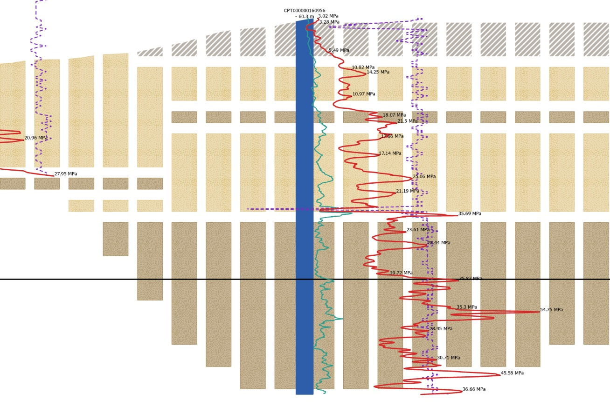
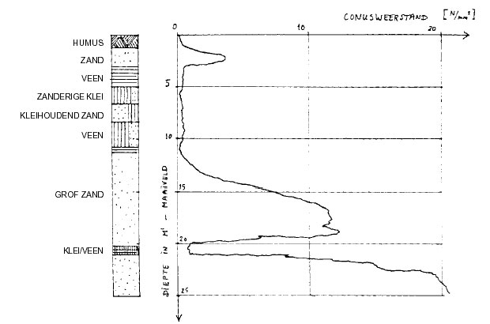
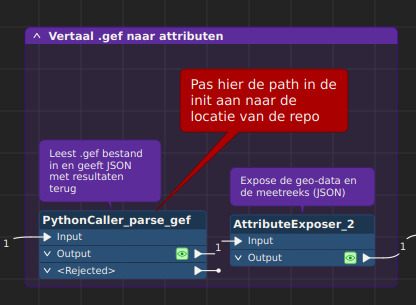

Python · FME · GIS · Data Engineering
De Profielentoolbox verwerkt GEF-bestanden razendsnel naar gestructureerde data, klaar voor gebruik in FME-workflows.

Werkwijze
Geen handmatige conversie meer. De toolbox verwerkt het volledige sonderingsprofiel inclusief georeferentie-attributen, klaar voor directe import.
01 —
Geef het pad naar het .gef bestand op. De toolbox leest de header en meetreeks automatisch uit.
02 —
Coordinaatstelsels worden herkend, dieptewaarden geconverteerd en output gevalideerd tegen het dataschema.
03 —
De PythonCaller importeert de module en retourneert gestructureerde feature-lijsten, direct bruikbaar in de workflow.
Vroeger
Nu
pip installIn de praktijk
Hieronder een greep uit de projecten waarbij de toolbox is ingezet.

Sonderingsgrafiek

FME-workflow met geïntegreerde PythonCaller module
Integratie
De PythonCaller blijft een dunne wrapper. Alle logica leeft in het pakket — getest, gedocumenteerd, versioned.
Samenwerking
We denken graag mee over jouw GIS- en data-engineering vraagstuk.